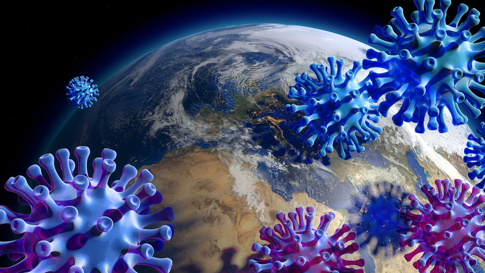

Вопросы профилактики респираторных инфекций в условиях распространения нового коронавируса
Вспышка нового коронавируса в Китае является одной из главных тем, о которых говорят все мировые СМИ. Учитывая скорость и масштабы распространения нового возбудителя, имеющего высокий риск опасных для жизни осложнений, а также ограниченные возможности борьбы с ним из-за отсутствия специфического лечения, ВОЗ приняла решение признать вспышку коронавируса 2019-nCoV чрезвычайной ситуацией международного значения (1).
Важные факты о новом коронавирусе
- Впервые про уханьский коронавирус, или 2019-nCoV, стало известно после 31 декабря 2019 года, когда в ВОЗ пришло уведомление о нескольких случаях пневмонии, выявленных в Китае, в городе Ухань. Через неделю, 7 января, данные о том, что пневмонии вызваны новым вирусом, подтвердились.
- Семейство коронавирусов, к которым принадлежит новый возбудитель, может поражать не только человека, но других позвоночных, от крупного рогатого скота до летучих мышей и даже рыб. На данный момент ещё точно не установлено, какое животное стало источником нового вируса.
- У людей коронавирусные инфекции вызывают привычные всем симптомы простуды (респираторный синдром) разной степени выраженности, иногда вместе с проявлениями гастроэнтерита.
- Вспышки неизвестных коронавирусных инфекций с угрожающими жизни людей осложнениями уже встречались раньше: в 2002 году в Китае (SARS-CoV ) и в 2012 году в Саудовской Аравии (MERS-CoV). Однако инкубационный период нового коронавируса предположительно длиннее, чем у MERS, что повышает риск его масштабного распространения по миру.
- По данным ВОЗ коронавирус 2019-nCoV поражает людей любого пола и всех возрастных групп, однако у людей с наличием хронических заболеваний (астма, диабет, сердечно-сосудистые заболевания и др.) риск развития тяжёлых осложнений выше.
- Средств специфической терапии нового вируса пока нет, поэтому проводится только симптоматическая терапия.
- По данным ВОЗ 21.01.20 было лабораторно подтверждено 314 случаев заболевания по всему миру, из них – 309 в Китае. Через 9 дней, по отчётам ВОЗ от 30.01.20 количество подтверждённых случаев составило уже 7818, из них - 7736 в Китае.
5 в США
14 в Таиланде
5 во Франции
4 в Германии и т.д. (1,2,3,4).
Основные пути передачи ОРВИ и нового коронавируса
Представителей семейства коронавирусов относят к возбудителям респираторных инфекций. Основным путём их передачи считается воздушно-капельный. Нельзя исключить также фекально-оральный путь передачи. Поэтому рекомендации по мерам профилактики заражения 2019-nCoV схожи с советами по предупреждению других ОРВИ, хотя и с некоторыми дополнениями (5).
Методы эффективной профилактики коронавируса и других респираторных инфекций
Для предупреждения заражения новым коронавирусом ВОЗ рекомендует:
- Регулярно очищайте руки с использованием мыла и воды или антисептика, в том числе перед едой или приготовлением пищи, после посещения мест общественного пользования и т.д.
- Избегайте близкого контакта с людьми, имеющими признаки простуды (кашель, чихание или температуру).
- Старайтесь не прикасаться к лицу, глазам, носу и рту немытыми руками.
- Используйте барьерные средства защиты органов дыхания в местах массового скопления людей. Не забывайте регулярно менять медицинские маски.
- Избегайте посещения мест массового скопления людей. При необходимости посещения рынков, зоопарков, зоомагазинов избегайте тесных контактов с животными и поверхностями, близкими к ним. Обязательно мойте руки после контакта с домашними животными.
- Поскольку еще окончательно не установлен перечень животных, которые могут быть резервуаром для нового вируса, желательно воздержаться от употребления сырых или недостаточно обработанных термически продуктов животного происхождения. Сырое мясо, рыба и молоко должны правильно храниться и обрабатываться, чтобы избежать вирусного загрязнения готовых блюд (5).
Из рекомендаций ВОЗ видно, что для профилактики заражения новым коронавирусом следует использовать комплекс мер, в которые входят как санитарно-гигиенические, так и барьерные способы защиты от респираторных инфекций.
О современных возможностях усилить барьерную защиту слизистых поговорим отдельно.
Барьерные спреи для профилактики респираторных инфекций
К сожалению, не у всех и не всегда есть возможность долго носить медицинскую маску в людном месте. Кроме того, медицинская маска как барьерный метод не даёт 100% защиты от заражения вирусом. Поэтому возникает логичный вопрос о дополнительном усилении барьерной функции слизистых оболочек. С этой задачей хорошо справляются барьерные спреи. Так, по данным исследований, назальный спрей Назаваль® Плюс на основе порошка микронизированной целлюлозы, создаёт на поверхности слизистой оболочки гелеобразный барьер, резко сокращающий абсорбцию антигенов. Например, исследование in vitro, сравнивающее гель на основе целлюлозы и агарный гель по степени диффузии антигена, показало, что спустя 360 минут диффузия через целлюлозный барьер составила всего 14%, в то время как через агарный гель за это время проникло 100% антигена (6). В опыте с заражением высокопатогенным вирусом гриппа А/H1N1 культуры клеток продемонстрирована способность средства Назаваль® Плюс защищать клеточную культуру от цитопатогенного воздействия вируса в течении 72 часов после нанесения (7). Исследование заболеваемости ОРВИ в группах добровольцев, применявших и не применявших барьерный назальный спрей Назаваль® Плюс в течение нескольких месяцев, показало уменьшение заболеваемости ОРВИ и более лёгкое протекание заболеваний в первой группе (использовавшей барьерный спрей) в эпидемический сезон (8,9,10,11). Добавление экстракта дикого чеснока в состав спрея помогает придать защитной плёнке дополнительный местный антибактериальный и противовирусный эффект, что повышает шансы клеток респираторного тракта избежать контакта с патогенными микроорганизмами (6,8). Ещё одним аргументом в пользу барьерных спреев стало их включение Минздрав РФ в список средств, рекомендованных для борьбы с коронавирусом (13). Таким образом, наиболее эффективной против нового коронавируса остаётся комплексная профилактика респираторных инфекций с соблюдением санитарно-гигиенических рекомендаций и применением барьерных средств защиты. Включение в комплекс профилактических мероприятий орошения слизистых барьерным назальным спреем уменьшает вероятность проникновения вирусных частиц и прочих инфекционных агентов в клетки слизистых оболочек верхних дыхательных путей.